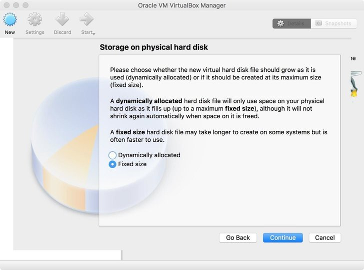
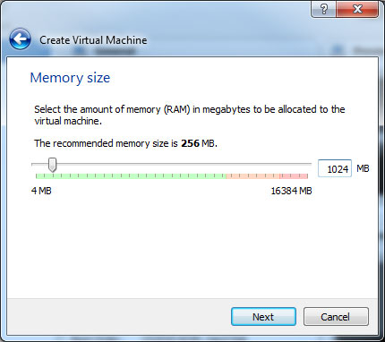
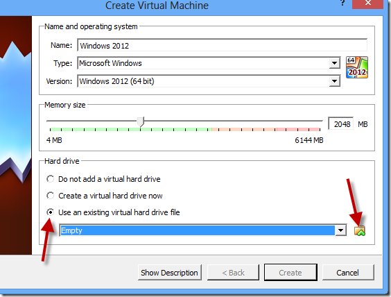
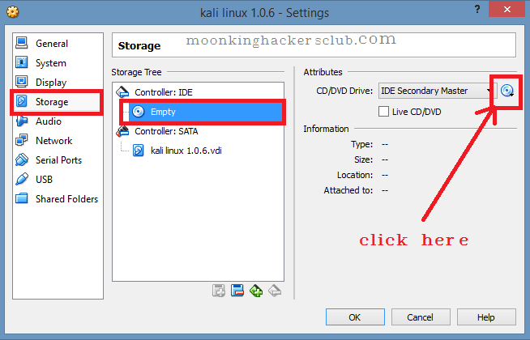

start ethical hacking from biginner to advanced with Kali linux
Kali Linux is a Debian-based Linux distribution aimed at advanced Penetration Testing and Security Auditing. Kali contains several hundred tools which are geared towards various information security tasks, such as Penetration Testing, Security research, Computer Forensics and Reverse Engineering.
Installation of kali linux
first download Oracle Virtualbox for kepping two operating system in 1 pc here download kali linux iso file from here
what is oracle Virtualbox?
Oracle Virtualbox is used to install and configure two operation system in one,like you having windows 7 then i will install Virtualbox and can used kali linux,windows 8 or whatever you like in the same windows....
what is iso file?
An ISO file is an image of a CD/DVD. Typically you would be able to use a burning program like Nero, or ImgBurn, to then burn that ISO file directly to a disk.
Installation of kali linux in Virtualbox
step 1.open Virtualbox and click on option new.

step 2. name the operating system as kali linux and press next.
step 3. selec the memory size,by default it is correct but you can increase it as per your wish....

step 4.now select option "use existing virtual hardisk" or either you can select "create a virtual hardisk" and click on next.

step 5. after this you can see the kali linux operating sytem on virtual box,right click on it and select settings and select storage and click on empty and select the iso file path where you have downloaded iso file.
